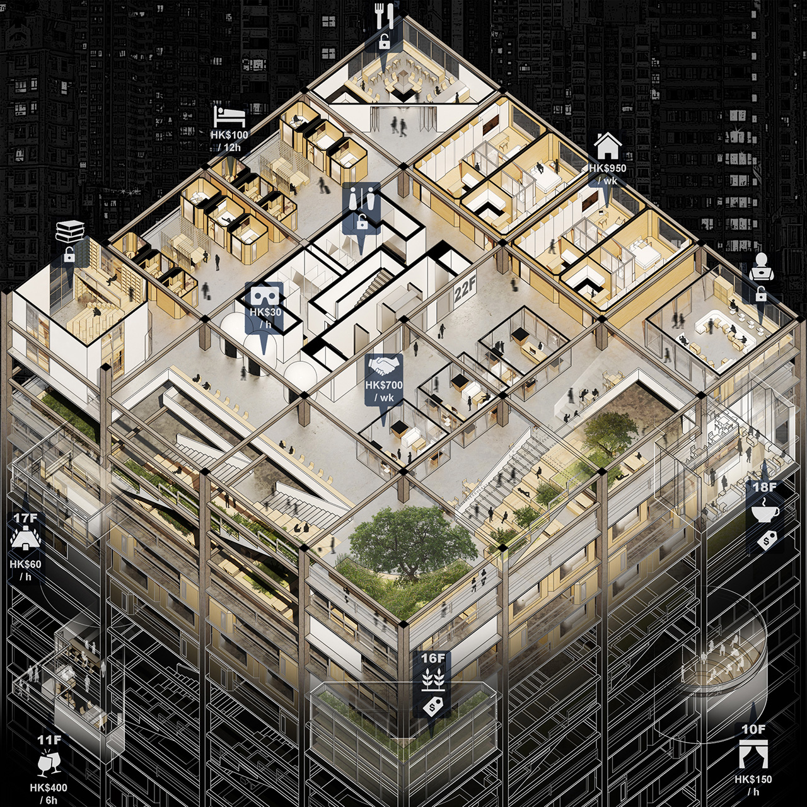
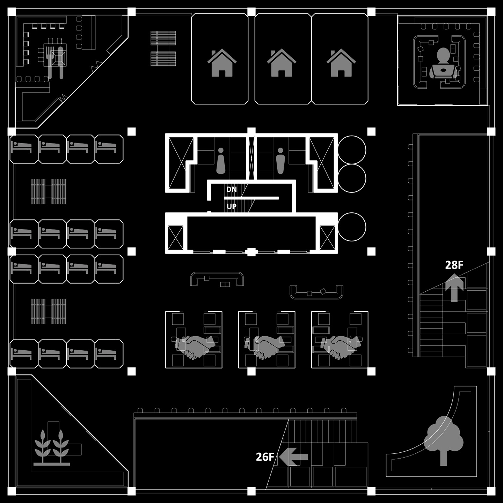

LIVE-IN-OFFICE DEVELOPMENT
Was LIO (Live-in-Office) an urban renaissance by the precious COVID recession to retrieve pre-pandemic office cultures? Or was it merely another real-estate speculation to sell romanticized memories? Despite the mixed reactions on social media, the office-themed co-living projects seemed to be the best practice of refilling millions of ghost downtown towers in an age of digital work, at least for illusionary summer before this new COVID-Mu wave brought back the pandemic reality. It is true that sharing workspaces, kitchens, and recreation facilities upon paid access would not necessarily reactivate the office-centered urban routines or social networks as advertised by developers, but researchers have found evidence of alternative urban locality emerging at LIO buildings. Instead of imitating the pre-digital past, LIO members are found to simulate their digital work-live routines in exploring their physical surroundings and socializing with 'officemates'. Whether this trend could revitalize or finish the pre-digital notions of office and city, we now have to wait for the end of this COVID-Mu wave and see if LIO members would return to their 'offices' in a hopeful premise that the projects could financially make it through.
 Selling 'office routines' during COVID recessions
 A floor plan with almost everything movable for frequent remolding
Some LIO members also call their place 'campus'
Advertisings attempt to simulate pre-pandemic co-working vibes
 ...or maybe capsule hotel vibes...
...or maybe capsule hotel vibes...
The illusionary summer when the pandemic seemed to end...